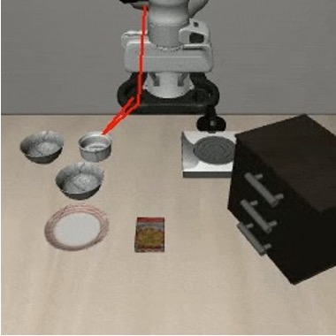
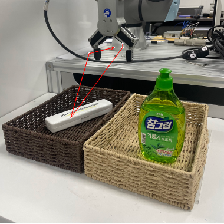

Recent robot foundation models, including action-reasoning VLA models and world-action models, can often generate semantically reasonable trajectories or videos in unseen environments. However, these plans do not always translate into reliable executable robot actions. This page shows qualitative examples of this planning-to-action gap.
The examples below compare planning outputs from MolmoAct and LingBot-VA with zero-shot action execution results in LIBERO or a local lab setup.
MolmoAct can generate plausible trajectory plans for manipulation tasks, even in unseen environments. These examples show planning results for both LIBERO and our local lab setup.


Although the trajectory-level plan is reasonable, zero-shot action execution often fails. The robot action does not reliably follow the intended trajectory, suggesting a gap between visual planning and executable control.
World-action models such as LingBot-VA can generate plausible future videos conditioned on a task instruction. The generated future trajectory often captures the correct high-level task intent and object interactions. However, reliable low-level action execution remains a separate challenge.
These examples suggest that robot foundation models may possess useful high-level planning ability, but still struggle to translate those plans into reliable low-level robot actions in new environments. This motivates studying action grounding, hand-eye coordination, and the relationship between visual plans and robot action coordinate systems.